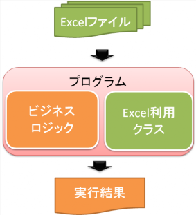

VBA より便利で手軽 Excel 操作スクリプト言語「Ruby」へのお誘い (後編)
はじめに
本記事は「VBA より便利で手軽 Excel 操作スクリプト言語「Ruby」へのお誘い (前編)」の後編です。前回は Ruby を使ってちゃっかり手早く Excel を処理するスクリプトを組むためのテクニックについて解説しました。
今回は、じっくり作って長く運用する Excel 利用システムを作りたい場合に使いたいテクニックをご紹介します。
必要となる環境
この記事で解説する事を行うには、Windows 上で、Microsoft Excel と Ruby が動く環境が必要です。Rubyの入手とインストールについては、FirstStepRuby を参照してください。
サンプルコードの動作は下記環境で確認しております。
- Windows XP Home Edition SP3
- ruby 1.9.1p0 [i386-mswin32]
- Microsft Excel 2007 SP1
なお、コードのエンコーディングはシフトJIS を用いて動作確認を行いました。同じくシフトJIS でサンプルコードを試す場合は、ソースファイルの先頭で下記ようにエンコーディング指定を行ってください。使っているRuby が1.8系でも1.9系でもこれで動作します。
#! ruby -Ks
# -*- coding: sjis -*-「投げ捨てろ！ Excel！！」
じっくり作って長く運用するようなプログラムの場合、大事なのは、Excel と距離を置いて、__Excel そのものが見えないように作る__ことです。 そのために、Excel の様な特定技術は限られた一部のクラスからのみ利用するようにして、依存度 (結合度) の低減と凝縮度の向上を目指しましょう。
Excel を抽象化して考える
たいていの場合、「Excel とは何か」と問われたら表計算ソフトウェアと答えると思います。しかし、我々プログラマの観点では、Excel の機能は API として立ち上がってきます。
例えば Excel の API は、以下のような機能を提供しています。
- データの全文検索
- キーから値を取り出す
- 統計分析機能の提供
- 計算機能の提供
- 永続ストレージ
- データ構造 (ツリー＋2次元配列) の提供
このように API としてみた場合、Excel とは抽象的な機能の集合体であると捉える事ができます。
この観点で Ruby から Excel を扱うようにすると、Excel を捨てざるを得ない状況に陥った場合にでも、同様の機能を持つ他のソフトウェア、ミドルウェア、ライブラリに交換することが容易となります。
例えば、ワークシートから値を取得するという要件の場合、”Worksheet から特定範囲の Range の Value を取得する”、と Excel の世界の言葉で考えずに、まずは抽象的に”データストレージから条件に合致するデータを取得”と考えてみましょう。
勿論、考えるだけではなく、Ruby でのビジネスロジックには Excel の機能を呼び出すコードを書かない様にすることが肝心です。
Excel 利用箇所を集中して実装する
先に述べたように、Ruby でのビジネスロジックには Excel の機能を呼び出すコードを書かないようにする必要があります。
具体的には、Excel を使うクラスは1つに集中することで、ビジネスロジックの快適さを保ちましょう。
この方法で実現した例として、私の作った XLS クラスや、XLS_KVS クラスがあります。
XLS クラス
http://github.com/bash0C7/XLS/blob/master/xls.rb
ワークシート上の各行を順に読み込み、1行目の値をキーとする Hash を2行目以降1行 につき1つ返します。そのため、Excel を意識する処理はこのクラスで完結し、ビジネスロジックではあくまで読み込んだ結果である Hash だけを相手にするだけで済みます。
勿論、このクラスの中では、Win32OLE 経由で Excel を直接操作しています。例えば、ワークシート上の行を順に読み込む部分は、下記のように Excel の API を呼び出しています。
#@sheetにはWorksheetのインスタンスを格納
@sheet.UsedRange.rows.each {|row| ...... }XLS_KVS クラス
http://github.com/bash0C7/XLS_KVS/blob/master/xls_kvs.rb
キーと値を組にして永続化するクラスです。ビジネスロジックからは、Hash と同様にデータの追加・取得・変更・削除を行えます。
永続化の仕掛けとしてこのクラス内部で Excel を用いて、ワークシート上にキーを格納する列と値を格納する列を表形式で持っています。そして、データの追加・取得・変更・削除は全てワークシート上のデータを操作しています。
- 追加
- Worksheet#UsedRange を取得し、ワークシート上で使われている行範囲下限の次の行にキーと値を設定する。
max_row = @sheet.UsedRange.Row + @sheet.UsedRange.Rows.count
@sheet.range("A#{max_row}").value = YAML.dump(key)
@sheet.range("B#{max_row}").value = YAML.dump(value)- 取得
- VLookup 関数で、指定されたキーに対応する値を取得する。
YAML.load(@app.WorksheetFunction.VLookup(YAML.dump(key),
@sheet.Range(KEYVALUE_COLS),
2,
false)
)- 変更
- Range#find メソッドで、指定されたキーを格納しているセルを、キーを格納している列から検索し、検索したセルの隣、値を格納する列のセルに値を設定する。
range = find(key)
range.offset(0, 1).value = YAML.dump(value) if range- 削除
- 指定されたキーを格納しているセルを、キーを格納している列から検索し、Range#Delete メソッドで、検索したセルがある行を削除する。
target_row = (key).Row
@sheet.Range("#{target_row}:#{target_row}").Delete (-4162)勿論、このクラスの場合も、Excel を意識する処理はこのクラスで完結しています。そのため、ビジネスロジックではどのように Excel を取り扱っているかを意識する必要は全くありません。
これらのクラスの様に Excel を使う部分を1クラスに切りだすことで、もし Excel を使うのを止めて別の手段に移行したいといった場合、クラス内のロジックを変更するだけ済みます。そのためビジネスロジックには手を入れずに済みます。
つまり、影響が局所化されるため、長い運用期間で変化が発生する場合にも対応が容易です。
また、このクラスはビジネスロジックとは直行した存在ですので、容易に再利用できます。
とはいえ、そのような変更を安全に行うには、やはりビジネスロジックが変更後もきちんと動くかをテストする必要があります。そのため予めテストコードを用意して、いつでも回帰テストを行えるように備えておきましょう。
切り離す
Excel を使うクラスは1つに集中するとビジネスロジックと Excel そのものは直接関わらなくなります。しかし (当然ながら) Excel を使っているクラスとビジネスロジックとは密接に関連した状態です。

そこで、ビジネスロジックを実装したクラスと、Excel を使っているクラスとの関連を切り離してしまいましょう。
具体的には、Excel 利用を担当するプログラムと、ビジネスロジックを担当するプログラムを別に作ります。この 2 プログラム間のインターフェイスとして、YAML や XML など Ruby の標準添付クラスで扱えるファイルを用います。

このようにすると、プログラムレベルで再利用できるため、様々なバッチファイルやシェルスクリプトからユーティリティとして扱う事ができ、大変便利です。
少し手間はかかりますが、ユーティティを整備しておくことで、ユーティリティの組み合わせだけで多くの事が実現できるようになります。ここまで考えて作るのは面倒かもしれませんが、後々元が取れるので是非意識して整備するよう心掛けたいところです。
まとめ
要約すると、以下2点にまとめることができます。
- Excel は API と考える。
- ビジネスロジックと Excel は、最大限切り離して依存度を下げる。
最後に
前編、後編の 2 回に渡って Ruby から Excel を使うテクニックについて解説しましたが、いかがでしたでしょうか？
同様の考え方やテクニックは、Excel の他に Word や PowerPoint など、他のソフトウェアに対して適用が可能です。是非、自分なり活用方法を編み出して、可能であればその成果を公開して下さい。
Happy Exceling!
著者について
こしば としあき
- 計画管理と設計が好きなソフトウェア技術者。Ruby & Excel 使い。
- ブログ : http://d.hatena.ne.jp/bash0C7/
- twitter : http://twitter.com/bash0C7
- github : http://github.com/bash0C7/